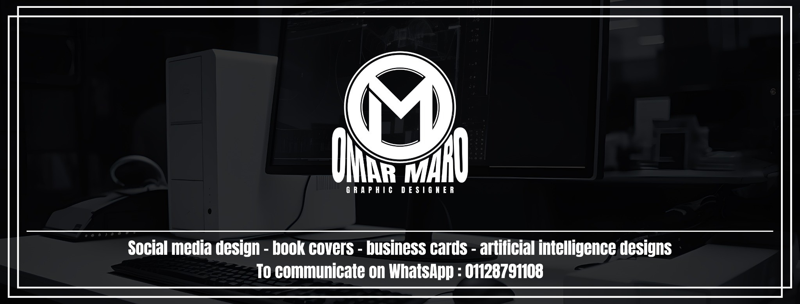

01 / VISUAL IDENTITY
هويات بصرية
بتحكي شخصية البراند.
بناء نظام بصري واضح، من اللوجو لحد التفاصيل اللي بتخلي العلامة مميزة.
اطلب تصميم هوية ↗GRAPHIC DESIGN / VISUAL IDENTITY
من الفكرة للأثر.
مش مجرد شكل حلو. كل مشروع وراه فكرة، شخصية، وتفاصيل بتخليه مختلف. شوف إزاي بنحوّل الأفكار لهويات وتصميمات تحكي حكايتها.
01 / SELECTED WORK
من الهوية البصرية لأغلفة الكتب والتصميمات الرقمية. كل مشروع تجربة مختلفة، وكل تفصيلة ليها مكانها.
شاهد كل الأعمال على Behance ↗ عرض المشروع ↗
عرض المشروع ↗ عرض المشروع ↗
عرض المشروع ↗ عرض المشروع ↗
عرض المشروع ↗ عرض المشروع ↗
عرض المشروع ↗ عرض المشروع ↗
عرض المشروع ↗ عرض المشروع ↗
عرض المشروع ↗ عرض المشروع ↗
عرض المشروع ↗ عرض المشروع ↗
عرض المشروع ↗ عرض المشروع ↗
عرض المشروع ↗ عرض المشروع ↗
عرض المشروع ↗ عرض المشروع ↗
عرض المشروع ↗ عرض المشروع ↗
عرض المشروع ↗ عرض المشروع ↗
عرض المشروع ↗ عرض المشروع ↗
عرض المشروع ↗ عرض المشروع ↗
عرض المشروع ↗ عرض المشروع ↗
عرض المشروع ↗ عرض المشروع ↗
عرض المشروع ↗ عرض المشروع ↗
عرض المشروع ↗ عرض المشروع ↗
عرض المشروع ↗ عرض المشروع ↗
عرض المشروع ↗ عرض المشروع ↗
عرض المشروع ↗ عرض المشروع ↗
عرض المشروع ↗ عرض المشروع ↗
عرض المشروع ↗ عرض المشروع ↗
عرض المشروع ↗ عرض المشروع ↗
عرض المشروع ↗ عرض المشروع ↗
عرض المشروع ↗التصميم مش قالب.
التصميم شخصية.
02 / WHAT I CREATE
كل نوع تصميم له أسلوبه، لكن الفكرة الواضحة والتفاصيل المدروسة هم الأساس.
بناء نظام بصري واضح، من اللوجو لحد التفاصيل اللي بتخلي العلامة مميزة.
اطلب تصميم هوية ↗03 / THE PROCESS
شغلنا واضح وبسيط: نفهم المطلوب، نختار الاتجاه، وبعدها ننفّذ بإحكام.
نتكلم عن المشروع، جمهوره، والرسالة اللي محتاج يوصلها.
نحدّد الأسلوب البصري والتكوينات اللي تناسب شخصية المشروع.
نحوّل الفكرة لتصميمات مترابطة وجاهزة للاستخدام.

OMAR MARO / ORIGINAL IDENTITY04 / ABOUT THE DESIGNER
عمر عادل / OMAR MARO
أنا Senior Graphic Designer بخبرة تتجاوز 6 سنوات في الإعلان والدعاية والتسويق. اشتغلت على مشروعات تجارية وطبية وإخبارية، ونفذت أعمالًا لجهات داخل مصر وخارجها.
خبرتي جمعت بين سرعة ودقة تنفيذ المطبوعات، وبناء محتوى بصري مستمر للبراندات، والتعامل مع تخصصات طبية متنوعة، وصولًا للتصميم في المجال الإخباري. بحب يكون لكل مشروع اتجاهه الخاص، من أول الفكرة لحد آخر تفصيلة.
القاهرة، مصر / CAIRO, EGYPT
CAREER / EXPERIENCE
محطات العمل المذكورة في سيرتي الذاتية، من مشروعات الطباعة إلى العلامات التجارية والمجال الطبي والإخباري.
أعمل بمسمى Senior Graphic Designer في شركة أريج لماكينات الطباعة بالقاهرة، منذ ديسمبر 2025.
الانتقال إلى مجال التصميم الإخباري والعمل ضمن فريق مهني، في تجربة وصفها الـCV بأنها مميزة على المستوى العملي والتعاوني.
تصميم مشروعات طبية لأطباء الأسنان والنساء والتوليد والتجميل الجراحي وغير الجراحي، مع تطوير البحث البصري وفهم خصوصية المحتوى الطبي. نفذت أكثر من 20 مشروعًا لأكثر من 8 أطباء.
التركيز على علامة تجارية واحدة وتطوير أفكار وحملات متنوعة لها. ساهمت الأفكار والمشروعات المنفذة في زيادة التفاعل على وسائل التواصل، وتطورت خلال الفترة مهارات تصميم السوشيال ميديا.
تنفيذ مشروعات تجارية متنوعة، مع تركيز أساسي على تصميمات الطباعة؛ وهي تجربة طورت التعامل مع اختلاف متطلبات المشاريع وسرعة التنفيذ وتوظيف الأدوات التصميمية.
CREATIVE TOOLKIT
أسماء المهارات كما وردت في الـCV، دون إضافة نسب إتقان غير موثّقة.
EDUCATION / LEARNING
بكالوريوس (التخصص غير مذكور في السيرة الذاتية)
مدرج في السيرة الذاتية ضمن التعليم بهذا الاسم، دون توضيح نوع الدراسة أو المؤهل.
05 / LET'S CREATE
سواء هتبدأ براند من الصفر أو عندك مشروع محتاج رؤية جديدة، احكيلي عنه وخلّينا نعمل حاجة مختلفة.
كلّمني على واتساب ↗